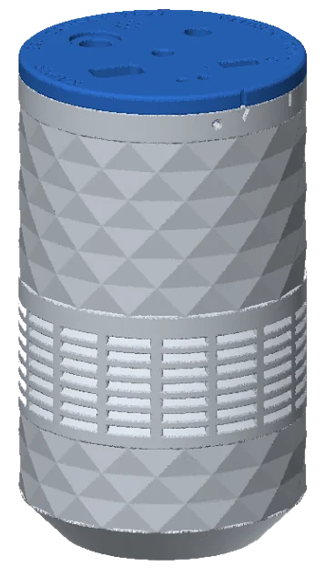
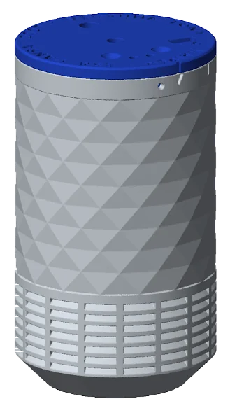
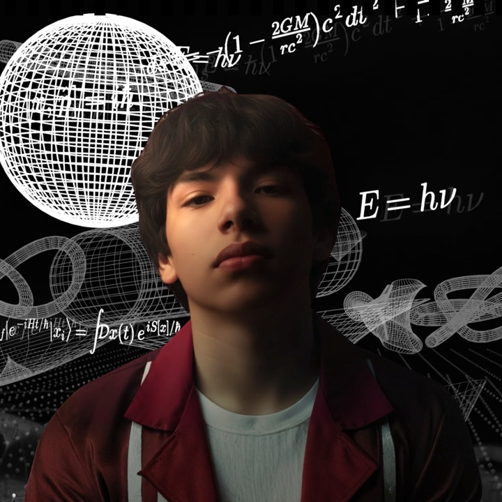
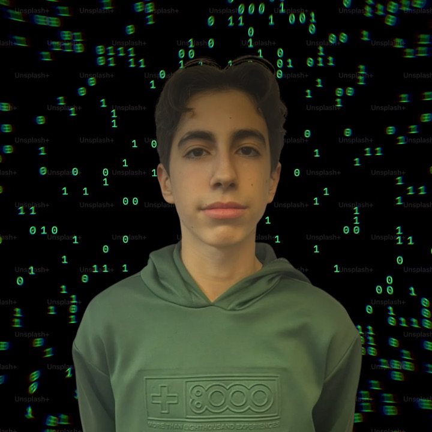
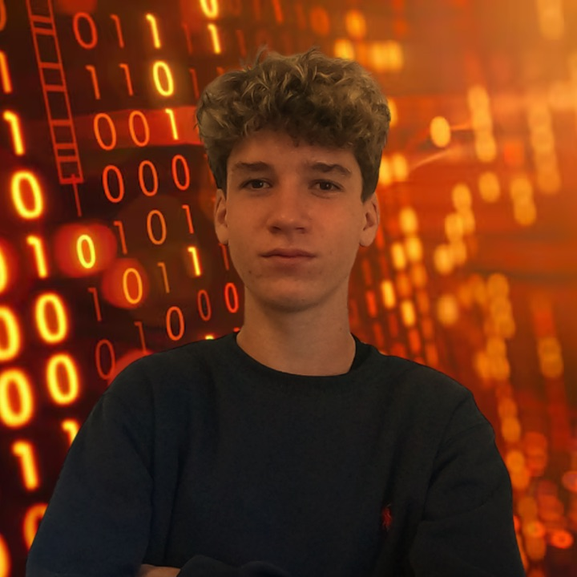
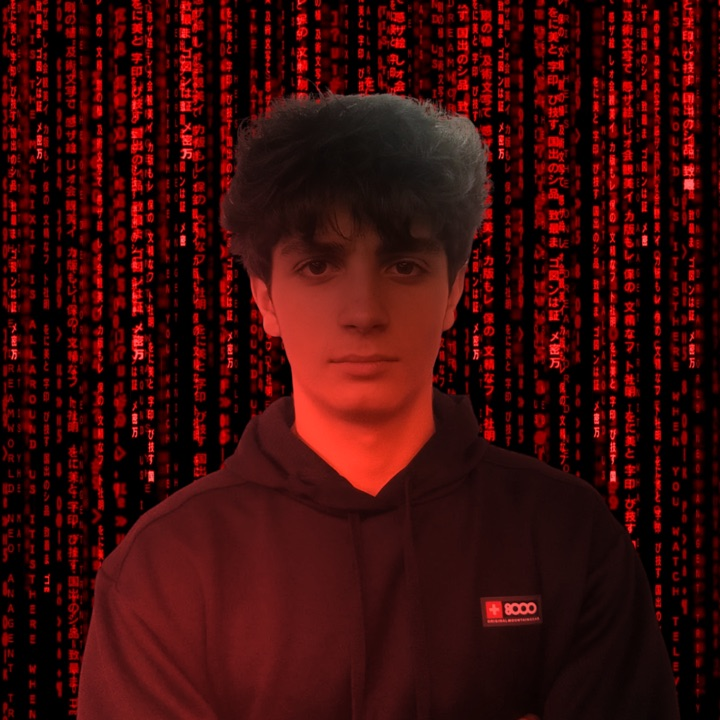

BMP180DHTGPSAPC220microSD

Kai 🌊+Kuiper=Kaiper
Un satélite del tamaño de una lata que cae 1 km buscando un océano invisible.

01 — La misión
Misión secundaria
02 — El CanSat


03 — Work in progress
04 — Equipo




05 — Conecta
Patrocinadores
Kaiper apps
Abrir la app